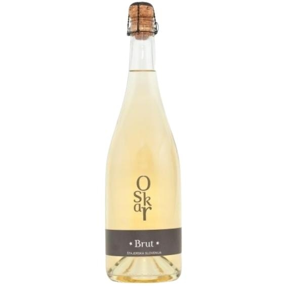

Peneča vina
Klasična metoda • Drobni mehurčki & Prestiž
Eleganca klasične metode
Peneča vina Vina Oskar nastajajo po tradicionalni klasični metodi z večletnim zorenjem na kvasovkah v hladu naše kleti. Zaznamujejo jih fini, obstojni mehurčki, kremasta tekstura ter prefinjenost, primerna za posebne življenjske trenutke in kulinarična doživetja.

Brut Penina
Prestižno suho peneče vino klasične metode z zorenjem na kvasovkah. Bogata aroma brioša, svežih agrumov in zrelih jabolk s polno, kremasto strukturo.
Naroči
Brut Rosé
Nežno rožnate barve z igrivimi mehurčki. Osvoji z zapeljivo svežino gozdnih jagod, rdečega ribeza in elegantnim mineralnim zaključkom.
Naroči